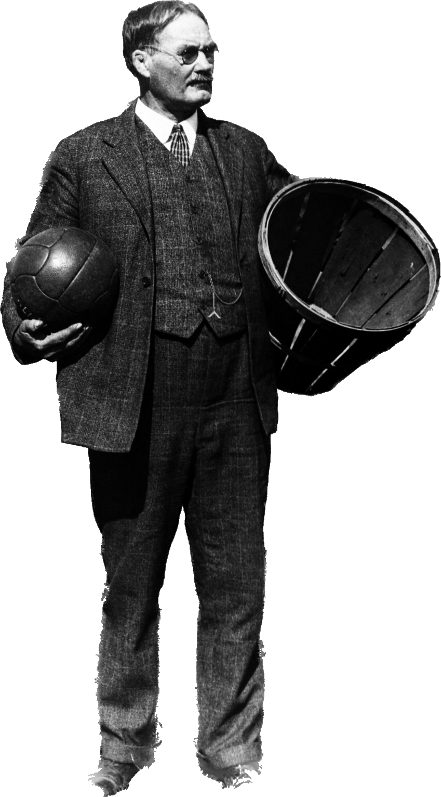
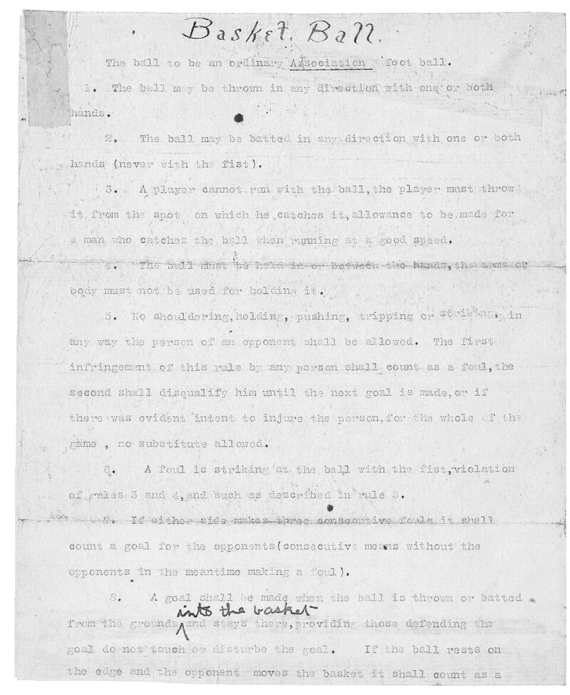
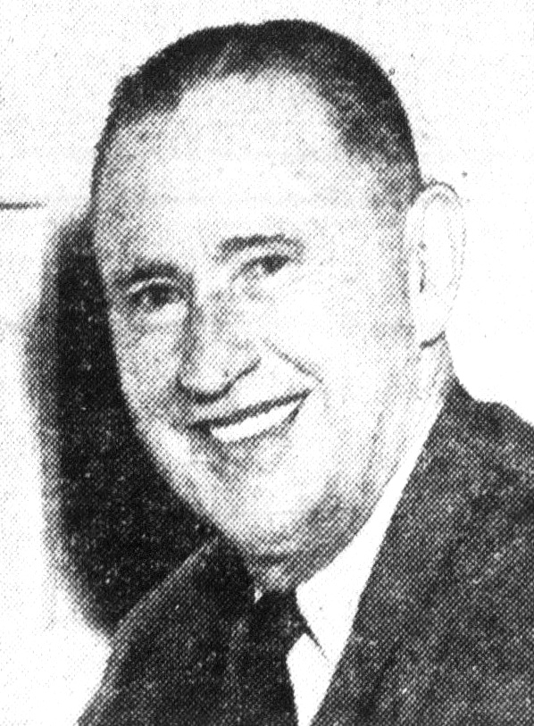
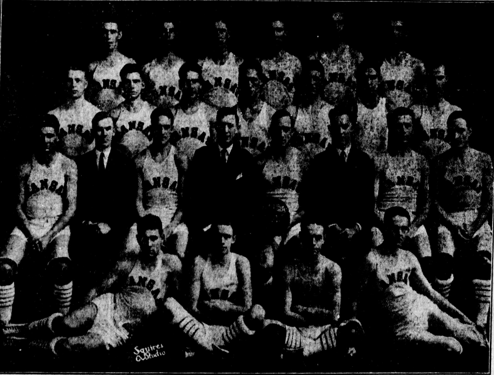

FICHA DE PRENSA

JAMES NAISMITH
ANTES DE 1939 · AUTOR DESCONOCIDO · DOMINIO PÚBLICO
SPRINGFIELD · KANSAS

LAS 13 REGLAS, PRIMER BORRADOR · DIC. 1891 · J. NAISMITH · DOMINIO PÚBLICO
PROFESOR

PHOG ALLEN · 1953 · AUTOR DESCONOCIDO · DOMINIO PÚBLICO
ALUMNO · KANSAS
«
CITA SEGÚN UNIVERSITY DAILY KANSAN Y ENCYCLOPEDIA.COM
NO
TEMPORADAS
1
BANQUILLO Y MARCAS: RECREACIÓN
VICTORIAS
0
CONTADOR: RECREACIÓN

KANSAS · 1924 · SQUIRES STUDIO · DOMINIO PÚBLICO
COACH F. C. ALLEN
ALUMNO DE ALLEN
ADOLPH RUPP
FUTURO ENTRENADOR
ALUMNO DE ALLEN
DEAN SMITH
FUTURO ENTRENADOR
FOTO DEL EQUIPO DE 1924; RUPP Y SMITH, EN OTRAS TEMPORADAS · FICHAS: RECREACIÓN
NAISMITH
SOLO SE JUEGA
PIZARRA
X
X
X
O
O
PIZARRA: RECREACIÓN
PHOG ALLEN, «EL PADRE DEL ENTRENAMIENTO DE BALONCESTO» (BRITANNICA)
FOTOS: DOMINIO PÚBLICO (AUTOR DESCONOCIDO; SQUIRES STUDIO; J. NAISMITH),
VÍA WIKIMEDIA COMMONS · BANCO, CONTADOR, PIZARRA Y FICHAS DE RUPP Y SMITH: RECREACIÓN